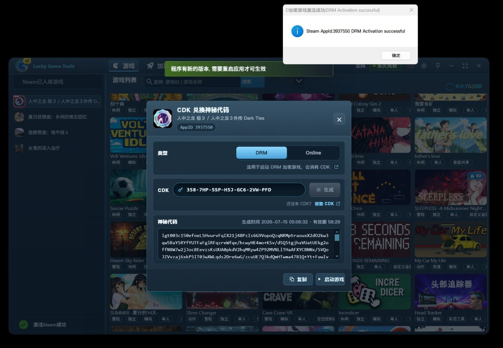

LuckyGameTools
CDK兌換指南
目前只針對捐贈過的用戶開放，捐贈時會贈送部份CDK,后續可聯繫作者繼續捐贈單獨獲取更多的CDK
您的SteamID等級權限保存于: https://github.com/luckygametools/steam-cfg/tree/main/gameauthdb/76561199784153002 (將76561199784153002替換成你的SteamID)
CDK 使用說明
新版已內置 CDK 生成流程：不需要再去 Steam 群找機器人，也不需要手動發送 drm+AppId+|+CDK 指令。
1
打開 LuckyGameTools，在左側遊戲列表中選中要啟動的遊戲。
2
在 CDK 兌換神秘代碼 彈窗中確認遊戲 AppID，類型一般保持 DRM 即可。
3
輸入 CDK，點擊 生成。提示生成神秘代碼成功後，代表當前遊戲已完成激活。
4
點擊 啟動遊戲，等待遊戲啟動完成即可。

舊版僅供仍在使用 6.0.3.152 之前版本的用戶參考。新版請優先使用左側「6.0.3.152+ 新版」流程。
機器人使用注意事項
1
以前版本需要通過 luckygametools-bot 機器人兌換神秘代碼。
2
一個 CDK 只能兌換一個神秘代碼，CDK 使用完成後會自動失效。
3
兌換後的神秘代碼只可用於當前 Steam 賬號。
4
CDK 獲取後請自行保存，不補發，未使用前永久有效。
舊版兌換步驟
1
在 luckygametools 的 Steam 聊天群組中找到名為 luckygametools-bot 的機器人，該機器人的角色為 bot，使用指令前請確認機器人在線。

2
在機器人頭像上右鍵發送消息，按格式發送：drm1234567|AAA-BBB-CCC-DDD-EEE-FFF-GGG
將 1234567 替換為遊戲 AppID，將後面的內容替換為你的 CDK。AppID 後面緊跟豎劃線 |。

將 1234567 替換為遊戲 AppID，將後面的內容替換為你的 CDK。AppID 後面緊跟豎劃線 |。
3
如果發送消息時 Steam 提示無權限，或機器人無響應，可在 Steam 群組中發送 呼叫boss、呼叫bot、callboss 或 callbot。

4
如果機器人仍無法正常回復，可以把 drm1234567|AAA-BBB-CCC-DDD-EEE-FFF-GGG 指令發在 Steam 群組內。機器人收到消息後會刪除 CDK 指令，並私發神秘代碼。
舊版 Online 指令
1
online1234567|AAA-BBB-CCC-DDD-EEE-FFF-GGG 用於部分啟動後還需要聯網驗證的單機遊戲，例如 1250410 微軟飛行模擬器。
2
此指令免費提供給捐贈用戶使用，不會消耗 CDK，僅用於驗證。
3
此指令會生成 lot 開頭的神秘代碼。
CDK 使用注意事項
1
6.0.3.152 及之後版本請優先使用軟件內置流程生成神秘代碼。
2
一個 CDK 只能兌換一個神秘代碼，CDK 使用完成後會自動失效。
3
生成後的神秘代碼只可用於當前 Steam 賬號與當前選中的遊戲 AppID。
4
CDK 獲取後請自行保存，未使用前永久有效，不補發。
如果神秘代碼生成成功後沒有及時啟動遊戲，請回到同一個遊戲頁面重新生成或聯繫作者協助處理。